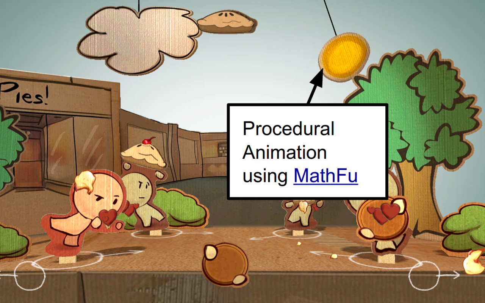

|
Pie Noon
|
Pie Noon is a simple multiplayer party game where you can throw pies at your friends. It is written in cross-platform C++.
Pie Noon demonstrates a quick and fun party game for the living room via support for the Nexus Player, an Android TV device. The game shows how to use several open source technology components developed by Google.

|

|

|

MathFu, a geometry math library optimized for ARM and x86 processors. The game uses MathFu data types for two and three dimensional vectors, and for the 4x4 matrices used by the rendering system, and also by the Motive animation system. |

|

|
In addition, fplutil is used to build, deploy, and run the game, build and archive the game, and profile the game's CPU performance.
Pie Noon is a cross-platform, open-source game that supports,
Pie Noon has been tested on the following platforms:
We use SDL as our cross platform layer. The game is written entirely in C++, with the exception of one Java file used only on Android builds. The game can be compiled using Linux, OS X or Windows.
Pie Noon can be downloaded from:
Important: Pie Noon uses submodules to reference other components it depends upon, so download the source from GitHub using: